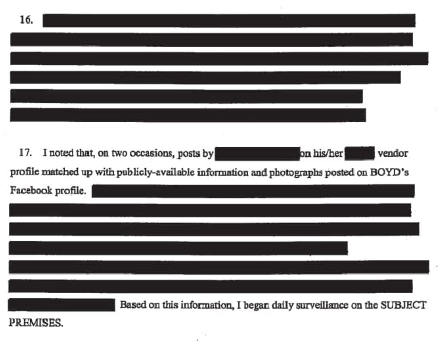
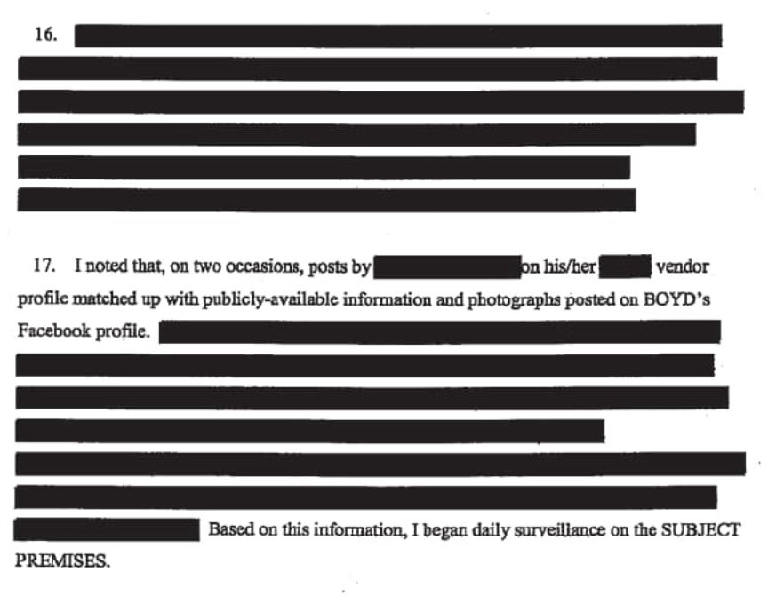

Steroid Vendor Phantomlabs Sentenced to Prison
The California resident behind the darkweb vendor account “Phantomlabs” will spend three years in prison for selling steroids.
Cody Boyd, 26, of Sacramento, California, received a three-year prison sentence for conspiracy to distribute and to possess with intent to distribute testosterone. Boyd, according to court documents, operated the vendor account “PhantomLabs” on Dream Market.

Boyd joined Dream Market in May 2017. By March 23, 2018, PhantomLabs had more than 620 positive reviews from customers. In December 2017, investigators with the infamous Northern California Illicit Digital Economy Task Force (NCIDE/NCIDETF) began monitoring the vendor account. Through the vendor account, Boyd sold, among other things, testosterone, Deca Durabolin, Anadrol, Anavar, Dianabol, boldenone, cocaine, Xanax, and pound-quantities of marijuana.
The press release from the U.S. Attorney’s Office for the Eastern District of California explained the identification of Boyd as follows: “Agents identified Boyd as the owner and operator of this store.” (The investigation is likely worth examining at a greater length.) A cursory examination of the investigation revealed some noteworthy elements, including:
Someone provided Homeland Security Investigations with a tip that Cody Boyd was a narcotics dealer in early 2017; Standard surveillance; Information on the vendor account matched information on Boyd’s Facebook account; Undercover purchases from Boyd’s vendor account; More redacted paragraphs than usual; Boyd wrapped his vehicle and lost his LEO tail by taking a new route to the Post Office at one point; Investigators watched Boyd’s Snapchat videos in real-time; An investigator used a burner to call Boyd’s cellphone; Boyd had accounts at multiple cryptocurrency exchanges; And feds went dumpster-diving again.

After linking the account to Boyd, investigators with the NCIDETF acquired search warrants for Boyd’s home and business. They executed the search warrants on March 26, 2018. The search on Boyd’s home resulted in the seizure of more than 100 pounds of steroids, including at least 1,500 vials of liquid steroids and approximately 10 pounds of steroids in powder form. They also found and seized approximately 20 pounds of cannabis, 50 Xanax pills, an AR-15-style rifle registered to Boyd, and more than $26,500 in cash as well as an electronic money counter. Ten fraudulent driver’s licenses bearing Boyd’s photo and items bearing the “Phantomlabs” logo were also found in Boyd’s home. A handgun was found in Boyd’s truck.
Boyd made mistakes beyond owning physical objects with the logo of his darkweb vendor profile. The mistakes included answering questions and consenting to a search of his phone.
The defendant made a Mirandized statement to officers. He said that he had begun selling steroids on Facebook and now sold steroids, marijuana, and Xanax through his PhantomLabs storefront, which operated on the Dream Market. The defendant said that he imported Chinese precursors needed to create steroids and then brewed, sold, and packaged the products for shipment. He estimated that his narcotics sales had brought in about $150,000 in earnings, typically received as Bitcoin, a Western Union transfer, or cash sent through the mail. The defendant said he had no other source of income. He added that he had at least two employees — a man in New York City who facilitated steroid sales and a second person who worked locally to package controlled substances sent in the mail.
The defendant consented to a search of his cellular phone, which documented Google searches on how to launder money, create off-shore bank accounts, and brew steroids. His phone also contained photographs relating to his business. As part of their investigation, agents seized the defendant’s Ford Shelby GT 350, which he valued at about $120,000.
The search conducted on Boyd’s business premises resulted in the seizure of a digital scale and approximately 50 USPS packages.
The investigators also seized Boyd’s truck valued at $120,000, 2.2 bitcoin, and a total of $95,000 in cash and Boyd’s bank accounts.
On September 30, 2021, US District Judge Troy L. Nunley sentenced Boyd to three years in prison.
complaint (pdf)
Cody Boyd, 26, of Sacramento, California, received a three-year prison sentence for conspiracy to distribute and to possess with intent to distribute testosterone. Boyd, according to court documents, operated the vendor account “PhantomLabs” on Dream Market.
Feds watching
Boyd joined Dream Market in May 2017. By March 23, 2018, PhantomLabs had more than 620 positive reviews from customers. In December 2017, investigators with the infamous Northern California Illicit Digital Economy Task Force (NCIDE/NCIDETF) began monitoring the vendor account. Through the vendor account, Boyd sold, among other things, testosterone, Deca Durabolin, Anadrol, Anavar, Dianabol, boldenone, cocaine, Xanax, and pound-quantities of marijuana.
The press release from the U.S. Attorney’s Office for the Eastern District of California explained the identification of Boyd as follows: “Agents identified Boyd as the owner and operator of this store.” (The investigation is likely worth examining at a greater length.) A cursory examination of the investigation revealed some noteworthy elements, including:

This is obviously a normal amount of redaction for a case this simple.
After linking the account to Boyd, investigators with the NCIDETF acquired search warrants for Boyd’s home and business. They executed the search warrants on March 26, 2018. The search on Boyd’s home resulted in the seizure of more than 100 pounds of steroids, including at least 1,500 vials of liquid steroids and approximately 10 pounds of steroids in powder form. They also found and seized approximately 20 pounds of cannabis, 50 Xanax pills, an AR-15-style rifle registered to Boyd, and more than $26,500 in cash as well as an electronic money counter. Ten fraudulent driver’s licenses bearing Boyd’s photo and items bearing the “Phantomlabs” logo were also found in Boyd’s home. A handgun was found in Boyd’s truck.
Boyd made mistakes beyond owning physical objects with the logo of his darkweb vendor profile. The mistakes included answering questions and consenting to a search of his phone.
The defendant made a Mirandized statement to officers. He said that he had begun selling steroids on Facebook and now sold steroids, marijuana, and Xanax through his PhantomLabs storefront, which operated on the Dream Market. The defendant said that he imported Chinese precursors needed to create steroids and then brewed, sold, and packaged the products for shipment. He estimated that his narcotics sales had brought in about $150,000 in earnings, typically received as Bitcoin, a Western Union transfer, or cash sent through the mail. The defendant said he had no other source of income. He added that he had at least two employees — a man in New York City who facilitated steroid sales and a second person who worked locally to package controlled substances sent in the mail.
The defendant consented to a search of his cellular phone, which documented Google searches on how to launder money, create off-shore bank accounts, and brew steroids. His phone also contained photographs relating to his business. As part of their investigation, agents seized the defendant’s Ford Shelby GT 350, which he valued at about $120,000.
The search conducted on Boyd’s business premises resulted in the seizure of a digital scale and approximately 50 USPS packages.
The investigators also seized Boyd’s truck valued at $120,000, 2.2 bitcoin, and a total of $95,000 in cash and Boyd’s bank accounts.
On September 30, 2021, US District Judge Troy L. Nunley sentenced Boyd to three years in prison.
complaint (pdf)